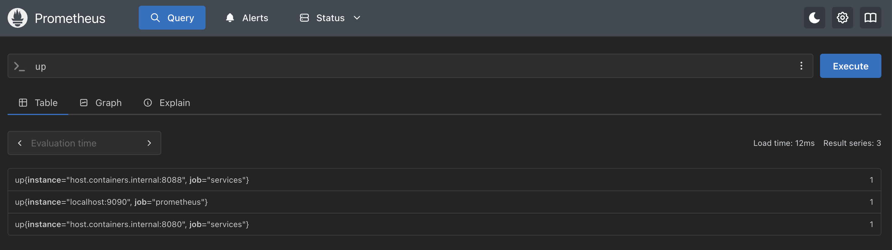
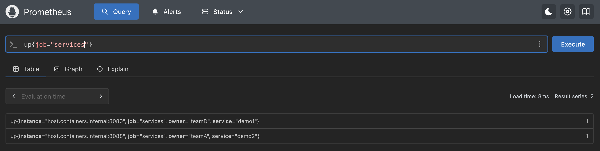
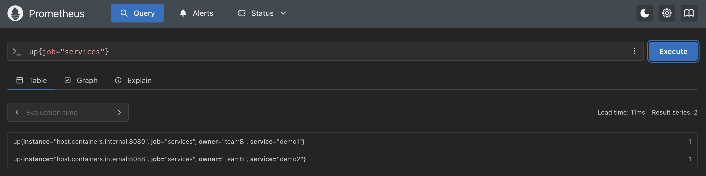
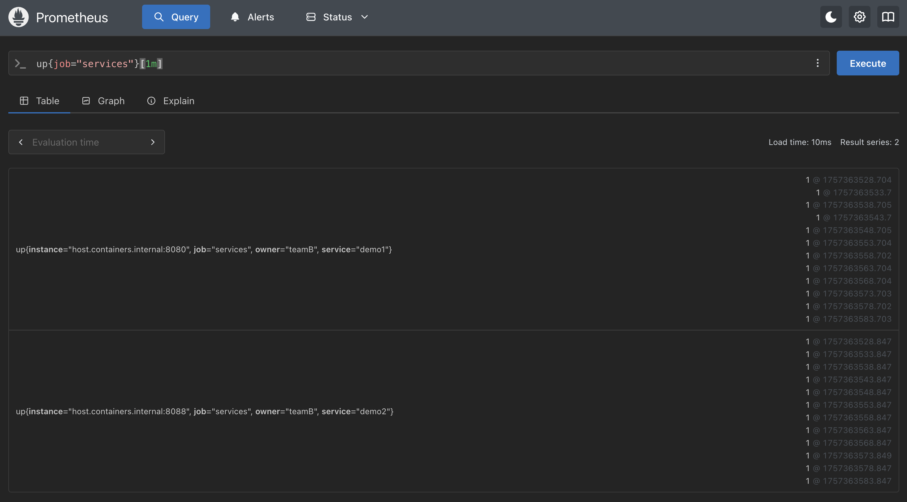
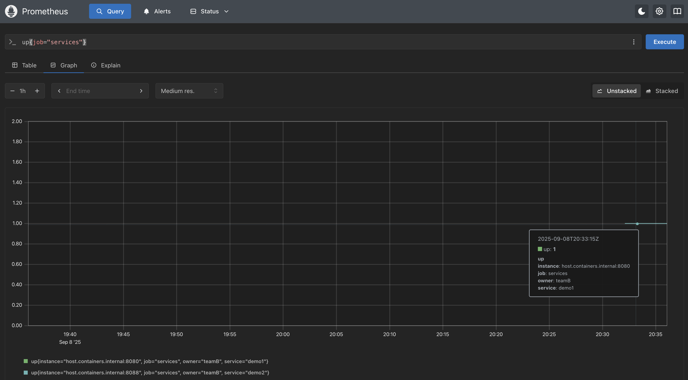
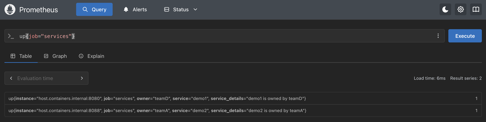
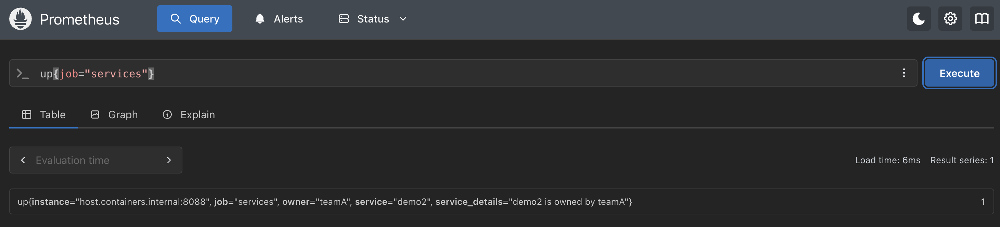
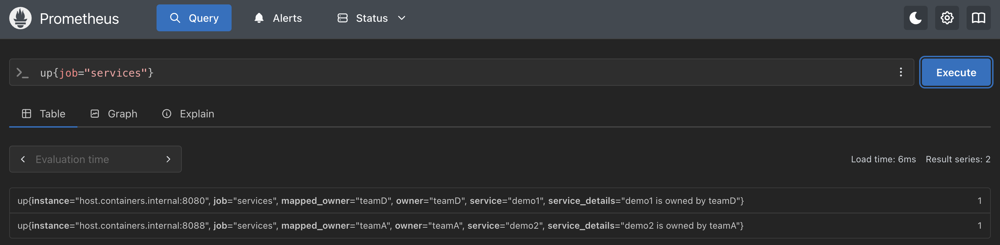

Lab 6 - Relabeling Metrics in Prometheus
Lab Goal
The lab teaches you how relabeling metrics work in Prometheus and how to apply them when mapping, aggregating, dropping, or filtering scraped metrics.
Requirements - Setting up for lab
To start this lab you'll need to have the following running:
Let's quickly walk through getting this all running assuming you've already installed these projects as shown in previous labs. The screenshots in this lab were captured on the container path, so on the source and Kubernetes (k3s) paths your
- a services demo instance on port 8080
- a services demo instance on port 8088
- a Prometheus instance collecting metrics from these instances
Let's quickly walk through getting this all running assuming you've already installed these projects as shown in previous labs. The screenshots in this lab were captured on the container path, so on the source and Kubernetes (k3s) paths your
instance label values
will read differently than what's pictured. For source installations, use
localhost:PORT_NUMBER for all configuration targets. For Kubernetes (k3s)
installations, there is no workshop-prometheus.yml to edit, everything shown
in this lab instead lives in the workshop-values.yaml file's
scrapeConfigs block, and you apply the two services demo manifests from lab 3
instead of running podman containers.
Requirements - Starting services on 8080
From a terminal in the services demo project root directory, start the first services demo
instance:
# source install.
$ ./installs/demo/services_demo
# container install.
$ podman run -p 8080:8080 prometheus_services_demo:v1
# Kubernetes (k3s) install.
$ kubectl apply -f services-demo.yaml -n prometheus
$ kubectl port-forward -n prometheus svc/services-demo 8080:8080
After starting, the services demo instance should have metrics scraping end points available.
Test at
http://localhost:8080/metrics:
# HELP demo_api_http_requests_in_progress The current number of API HTTP requests in progress.
# TYPE demo_api_http_requests_in_progress gauge
demo_api_http_requests_in_progress 1
# HELP demo_api_request_duration_seconds A histogram of the API HTTP request durations in seconds.
# TYPE demo_api_request_duration_seconds histogram
demo_api_request_duration_seconds_bucket{method="GET",path="/api/bar",status="200",le="0.0001"} 0
demo_api_request_duration_seconds_bucket{method="GET",path="/api/bar",status="200",le="0.00015000000000000001"} 0
demo_api_request_duration_seconds_bucket{method="GET",path="/api/bar",status="200",le="0.00022500000000000002"} 0
demo_api_request_duration_seconds_bucket{method="GET",path="/api/bar",status="200",le="0.0003375"} 0
demo_api_request_duration_seconds_bucket{method="GET",path="/api/bar",status="200",le="0.00050625"} 0
demo_api_request_duration_seconds_bucket{method="GET",path="/api/bar",status="200",le="0.000759375"} 0
demo_api_request_duration_seconds_bucket{method="GET",path="/api/bar",status="200",le="0.0011390624999999999"} 0
demo_api_request_duration_seconds_bucket{method="GET",path="/api/bar",status="200",le="0.0017085937499999998"} 0
demo_api_request_duration_seconds_bucket{method="GET",path="/api/bar",status="200",le="0.0025628906249999996"} 0
demo_api_request_duration_seconds_bucket{method="GET",path="/api/bar",status="200",le="0.0038443359374999994"} 0
...
Requirements - Starting services on 8088
From a different terminal window, start the second services demo instance on port 8088 (any
unoccupied port will work if there is a conflict). On Kubernetes you re-apply the
services-demo-2.yaml file from lab 3, the port number is a port-forward
detail only, the cluster still scrapes it on 8080:
# source install.
$ ./installs/demo/services_demo --listen-address localhost:8088
# container install.
$ podman run -p 8088:8080 prometheus_services_demo:v1
# Kubernetes (k3s) install.
$ kubectl apply -f services-demo-2.yaml -n prometheus
$ kubectl port-forward -n prometheus svc/services-demo-2 8081:8080
After starting, the second services demo instance should have metrics scraping end points
available. Test at
http://localhost:8088/metrics (on Kubernetes that's
http://localhost:8081/metrics, whatever port you gave the port-forward
above):
# HELP demo_api_http_requests_in_progress The current number of API HTTP requests in progress.
# TYPE demo_api_http_requests_in_progress gauge
demo_api_http_requests_in_progress 1
# HELP demo_api_request_duration_seconds A histogram of the API HTTP request durations in seconds.
# TYPE demo_api_request_duration_seconds histogram
demo_api_request_duration_seconds_bucket{method="GET",path="/api/bar",status="200",le="0.0001"} 0
demo_api_request_duration_seconds_bucket{method="GET",path="/api/bar",status="200",le="0.00015000000000000001"} 0
demo_api_request_duration_seconds_bucket{method="GET",path="/api/bar",status="200",le="0.00022500000000000002"} 0
demo_api_request_duration_seconds_bucket{method="GET",path="/api/bar",status="200",le="0.0003375"} 0
demo_api_request_duration_seconds_bucket{method="GET",path="/api/bar",status="200",le="0.00050625"} 0
demo_api_request_duration_seconds_bucket{method="GET",path="/api/bar",status="200",le="0.000759375"} 0
demo_api_request_duration_seconds_bucket{method="GET",path="/api/bar",status="200",le="0.0011390624999999999"} 0
demo_api_request_duration_seconds_bucket{method="GET",path="/api/bar",status="200",le="0.0017085937499999998"} 0
demo_api_request_duration_seconds_bucket{method="GET",path="/api/bar",status="200",le="0.0025628906249999996"} 0
demo_api_request_duration_seconds_bucket{method="GET",path="/api/bar",status="200",le="0.0038443359374999994"} 0
...
Intermezzo - Discovering container IP addresses
When using containers, Prometheus needs their container IP address as it can not resolve
localhost to different containers. To do this we can use the following variable provided
by Podman to update our Prometheus configuration
target lines to
automatically use the assigned IP address:
- target ["host.containers.internal:PORT_NUMBER"]
Note: if you are using Docker tooling, then your configuration should use the following variable
to automatically use the assigned IP address:
- target ["host.docker.internal:PORT_NUMBER"]
Requirements - Baseline configuration for Prometheus
Before you start Prometheus, you need to ensure the baseline configuration is set to scrape
these services instances. On the source and container paths, verify that your Prometheus
configuration file (we've been working in this workshop with one called
workshop-prometheus.yml) matches the following (if using the Kubernetes path,
see the next slide instead):
# workshop config
global:
scrape_interval: 5s
scrape_configs:
# Scraping Prometheus.
- job_name: "prometheus"
static_configs:
- targets: ["localhost:9090"]
# Scraping services demo.
- job_name: "services"
static_configs:
- targets: ["host.containers.internal:8080"]
- targets: ["host.containers.internal:8088"]
Requirements - Baseline configuration on Kubernetes
On the Kubernetes path there is no
workshop-prometheus.yml to edit. Open the
workshop-values.yaml file from lab 2 and verify the services
job under scrapeConfigs lists both targets, exactly as you left it in lab 3.
In-cluster DNS resolves the names, so the port stays 8080:
# Scraping only Prometheus.
scrapeConfigs:
... <<<< LEAVE WHAT IS ALREADY THERE
# Scraping services demo.
services:
job_name: services
static_configs:
- targets:
- services-demo:8080
- services-demo-2:8080
Requirements - Starting your Prometheus instance
After rebuilding the Prometheus image, start it with the following command:
# source install.
$ ./prometheus --config.file=support/workshop-prometheus.yml
# container install.
$ podman run -p 9090:9090 workshop-prometheus:v3.13 --config.file=/etc/prometheus/workshop-prometheus.yml
# Kubernetes (k3s) install.
$ helm upgrade --install workshop-prometheus prometheus-community/prometheus \
--version 29.20.0 \
--namespace prometheus --create-namespace \
-f workshop-values.yaml
Requirements - Reaching Prometheus on Kubernetes
The Prometheus server only has a
ClusterIP service on the Kubernetes path, so
it's not reachable until you port-forward it, in its own terminal window:
$ kubectl port-forward -n prometheus svc/workshop-prometheus-server 9090:9090
On the source and container paths, Prometheus is already bound to
localhost:9090
and there is nothing to do here.
Requirements - Inspecting all instance health
You should see two services instances and a Prometheus instance, all actively being scraped as
indicated with a 1 using the
up metric in the Prometheus expression browser
at http://localhost:9090:

Relabeling - Why would you?
Prometheus scrapes targets you configure to collect metrics. These metrics have labels, either
auto instrumented or assigned, and alerts have labels they pass on to their alert destinations.
Eventually, you're going to want to manipulate or filter metrics based on their label values.
A few examples:
Relabeling is a concept that allows you to configure transformations and filtering rules.
- monitor only certain targets based on annotation indicating they should be scrapped.
- to add an HTTP query parameter to the scrape request for a target.
- limit cost by storing only a filtered subset of the samples scraped from a given target.
- remove a duplicate label from alerts sent to the Alert Manager.
- combine two label values of a scraped series into a single label.
Relabeling is a concept that allows you to configure transformations and filtering rules.
Relabeling - How it works
Relabeling is implemented as a series of transformation steps applied in different sections of
a Prometheus configuration file. They filter or modify a list of labeled objects. You can apply
relabeling to the following types of labeled objects:
The first two will be covered in this lab in detail, so let's dig into their configuration layouts.
- discovered scrape targets.
- individual samples from scrapes
- alerts sent to the Alert Manager, would be found in
alert_relabel_configssection in thealertmanager_configsection. - samples written to remote storage systems, would be found in
write_relabel_configssection in theremote_writesection.
The first two will be covered in this lab in detail, so let's dig into their configuration layouts.
Relabeling - Configuration layout
Using relabeling to discover scraping targets and dealing with individual samples from scrapes
are worth a closer look. Let's see how they are applied in the Prometheus configuration file:
Now you know the layout, but how do relabeling rules work?
- for discovered scrape targets, nested sections layout:
scrape_configrelabel_configs- for individual samples from scrapes, nested sections layout:
scrape_configmetric_relabel_configs
Now you know the layout, but how do relabeling rules work?
Relabeling - Where this lives on Kubernetes
On the Kubernetes (k3s) path there is no
Every relabeling rule in this lab drops in under that
workshop-prometheus.yml. Everything
this lab shows you under scrape_configs → services instead lives under the
services entry in the workshop-values.yaml file's
scrapeConfigs block, nested one level differently but using the exact same
field names: relabel_configs, action,
source_labels, regex, replacement,
target_label, and so on.Every relabeling rule in this lab drops in under that
services entry
unchanged. To apply a change, re-run the same helm upgrade --install
command from the requirements section instead of rebuilding and restarting, the
configmap-reload sidecar tells Prometheus to reload itself.
Relabeling - How modify rules work
A relabeling configuration section consists of a list of rules that are applied in sequence to
each labeled object. Each rule in the chain may either modify or drop a labeled object. Here's
an example of transforming to modify an object:
On the next page is an example of an object transformation that leads to it being dropped.
- INITIAL OBJECT passed to first rule →
Rule 1 applied -> results object passed ->Rule 2 applied -> results object passed ->Rule 3 applied -> results object passed ->Rule N applied -> results object passed ->- OUTPUT OBJECT
On the next page is an example of an object transformation that leads to it being dropped.
Relabeling - How dropping works
Here's an example of transforming that leads to dropping an object:
A relabeling rule may keep or drop an object based on a regular expression match, may modify labels, or may map a whole set of labels to another set. Once relabeling drops a labeled object no further relabeling steps are executed, and it's deleted from the output list, usually meaning it's not going to be scrapped.
- INITIAL OBJECT passed to first rule
Rule 1 applied -> results object passed ->Rule 2 applied, object dropped, execution aborted...Rule N...
A relabeling rule may keep or drop an object based on a regular expression match, may modify labels, or may map a whole set of labels to another set. Once relabeling drops a labeled object no further relabeling steps are executed, and it's deleted from the output list, usually meaning it's not going to be scrapped.
Intermezzo - Touring hidden labels
Labels starting with a double underscore,
__some-label, are automatically removed
after the last relabeling rule and thus do not make it into the final labels of any object.
These specially prefixed labels can be used for storing and passing extra metadata during the
relabeling phase to make relabeling decisions or changes to the object's labels.
Intermezzo - Hidden labels controlling scraping
For scraping targets some hidden labels have a special meaning for controlling how Prometheus
scrapes a target:
__address__: contains the TCP address that should be scrapped for a target. After any relabeling, Prometheus sets the instance label to the value of__address__if you do not set the instance label explicitly to another value before that.__scheme__: contains HTTP scheme (http or https) with which the target should be scrapped. Defaults to http.__metrics_path__: contains HTTP path to scrape metrics from. Defaults to /metrics.__param_[name]: contains HTTP query parameter names and their values that should be sent along with a scrape request. Possible to set or override each label using relabeling rules to produce custom scrape behaviors for individual targets.
Intermezzo - Hidden labels from service discovery
Service discovery has not yet been handled, so this is a preview on the subject just covering
its usage of hidden labels. It provides a set of labels starting with
Examples of what labels a specific service discovery mechanism generates and uses can be found in their configuration documentation.
__meta_
that contain discovery-specific metadata about a target.Examples of what labels a specific service discovery mechanism generates and uses can be found in their configuration documentation.
Intermezzo - Temporary label usage
Most programming languages and scripting languages allow you to pass temporary values in variables
that are not recognized outside a certain scope that you control. Think of a local variable that
you use to store a value for use within a single method or class.
You might find that you have a need to store a temporary label value in a relabeling step for use in a subsequent relabeling step. You can use the
You might find that you have a need to store a temporary label value in a relabeling step for use in a subsequent relabeling step. You can use the
__tmp label name prefix.
Labels starting with __tmp are never used by Prometheus itself.
Relabeling - Available fields for rules
Relabeling is done with relabeling rules which can contain any number of the following fields
depending on the
ACTION you desire:action:a relabeling actionsource_labels:list of source label namesseparator:a source label separatortarget_label:a target labelregex:a regular expressionmodulus:a modulus valuereplacement:some replacement string
Relabeling - Action field (part 1)
The
action field is used to define the relabeling action to be taken. If
none is specified the default is to replace. The following options is the
first part, part two will be on the next slide:replace- match regex againstsource_labels, if match then setstarget_labeltoreplacementvalue. If no match, no replacement.lowercase- mapssource_labelto lowercaseuppercase- mapssource_labelto uppercasekeep- drop targets whenregexdoes not matchsource_labelsdrop- drop targets whenregexmatchessource_labelshashmod- settarget_labelto the MODULUS of a HASH of thesource_labels
Relabeling - Action field (part 2)
This is the second part of the possible values for the
Warning: careful with
action field:keepequal- drop targets whensource_labelsdoes not matchtarget_labellabelkeep- matchregexagainst all label names, if label does not match, remove from the set of labelsdropequal- drop targets whensource_labelsmatchtarget_labellabeldrop- matchregexagainst all label names, if label matches, remove from the set of labelslabelmap- matchregexagainst ALL source label names, copy values of matching labels to label names given byreplacement
Warning: careful with
labeldrop and labelkeep to ensure metrics are
uniquely labeled after any labels are removed.
Relabeling - Source labels field
The
source_labels field contains a list of label names that are separated
using the separator field string (which defaults to a semicolon ";") and
matched against the provided regular expression found in the regex field.
Relabeling - Separator and target label fields
The
The
separator field string (which defaults to a semicolon ";") is used for
separating the source_labels when concatenating matching labels.The
target_label field contains the name of the label that should be
overwritten when using the replace or hashmod relabel
actions.
Relabeling - Regex and modulus fields
The
The
regex field contains a regular expression to match against the list
found in source_labels. The default is "(.*)", matching any
source_labels.The
modulus field contains the modulus to take off a hash of the
concatenated source_labels. A useful thing to do when using horizontal
sharding of Prometheus instances.
Relabeling - The replacement field
The
replacement field contains a replacement string that is written to the
target_label for replace relabel actions. It can also
refer to regular expression capture groups that were captured by the regex
field.
Relabeling - Use cases for replacement
Time for you to try relabeling... but what would be a good use case for relabeling?
Let's start with a basic one, that of setting an existing label value to a new fixed value. Before we do that, we will need to add some labels to modify the current services demo configuration in your Prometheus instance. This far along in the workshop, you should be able to edit, update, and restart your Prometheus configuration on your own. Let's update you're configuration as shown on the next slide.
Let's start with a basic one, that of setting an existing label value to a new fixed value. Before we do that, we will need to add some labels to modify the current services demo configuration in your Prometheus instance. This far along in the workshop, you should be able to edit, update, and restart your Prometheus configuration on your own. Let's update you're configuration as shown on the next slide.
Relabeling - Setting a few static labels
Make sure the services static config section in your Prometheus configuration file matches what
is shown here (you're adding two new labels). Reload your configuration to apply the changes:
rebuild your Prometheus image and restart on the source and container paths, re-run the
helm upgrade --install command on Kubernetes:
# Scraping services demo.
- job_name: "services"
static_configs:
- targets: ["host.containers.internal:8080"]
labels:
service: "demo1"
owner: "teamD"
- targets: ["host.containers.internal:8088"]
labels:
service: "demo2"
owner: "teamA"
Relabeling - Verify static labels applied
Verify by querying all services in the Prometheus query console:
up{job="services"}

Relabeling - Back to use case replacement
Now that we have set up Prometheus to collect labels, we can try out the use case for
What if we decided for the upcoming vacation period, that team B would be the team to cover services support as owner while the rest are gone? We could set a temporary relabeling rule to replace all instances of the owner to team B. Imagine if you had thousands of services deployed needing this change? When the vacation is over, you just remove or turn off this relabeling rule.
Good solution! Let's try it...
replace by setting an existing label value to a new fixed value.What if we decided for the upcoming vacation period, that team B would be the team to cover services support as owner while the rest are gone? We could set a temporary relabeling rule to replace all instances of the owner to team B. Imagine if you had thousands of services deployed needing this change? When the vacation is over, you just remove or turn off this relabeling rule.
Good solution! Let's try it...
Relabeling - Replace rule structure
The
replace relabeling rule structure with all possible fields looks like
this, and note you don't need to use all the fields for each use:
- action: 'replace'
source_labels: [list_of_source_labels]
separator: some_separator # Default is ';'
regex: some_regular_expression # Defaults to '(.*)' matching any value
replacement: replace_string # Defaults to '$1' the first capturing group
target_label: some_existing_target_label
Relabeling - Vacation for teams
Let's relabel all services instances during the vacation to the owner being team B. Add the
new section
relabel_configs just after the services
static_configs section as shown. Reload your configuration to verify changes
(rebuild and restart on source/container, re-run the helm upgrade on Kubernetes):
# Scraping services demo.
- job_name: "services"
static_configs:
- targets: ["host.containers.internal:8080"]
labels:
service: "demo1"
owner: "teamD"
- targets: ["host.containers.internal:8088"]
labels:
service: "demo2"
owner: "teamA"
relabel_configs:
# Relabeling owner for teamA vacation.
- action: "replace"
replacement: "teamB"
target_label: "owner"
Relabeling - Verify vacation for team A
Verify by querying all services in the Prometheus query console:
up{job="services"}

Relabeling - Why are there still 4 services?
If using source or Kubernetes installs, you might notice that you are seeing 4 services, how's
that possible?
The thing is, you are querying all existing metrics data that Prometheus has collected. The service owned by team A and the service owned by team B where already in the metrics TSDB. With the new relabeling, you're seeing Prometheus collecting two new metrics entries in your TSDB showing up as team B (twice, you renamed both existing labels!). Let's see if we can filter our query to just show the current service owners since the other teams started vacations...
Note: this only applies to the source and Kubernetes paths, where a config reload does not restart Prometheus. If you stop and restart a container image of Prometheus, you lose the historical data in your TSDB, so you won't see older entries of the services there.
The thing is, you are querying all existing metrics data that Prometheus has collected. The service owned by team A and the service owned by team B where already in the metrics TSDB. With the new relabeling, you're seeing Prometheus collecting two new metrics entries in your TSDB showing up as team B (twice, you renamed both existing labels!). Let's see if we can filter our query to just show the current service owners since the other teams started vacations...
Note: this only applies to the source and Kubernetes paths, where a config reload does not restart Prometheus. If you stop and restart a container image of Prometheus, you lose the historical data in your TSDB, so you won't see older entries of the services there.
Relabeling - Verify services owners now
Verify by querying services since 1m in the Prometheus query console, noting that they
are only showing team B owners for both of our services:

Relabeling - Visual validation team B
Visually verify relabeling is working after team D label changed by filtering the
graph view and selecting team B owned service. Note it's relabeled from the point where team D
stopped (or, on the container path, from whenever you restarted the container image):

Relabeling - Eventually services view updates
Note that over time, something like 10 minutes of replacing the owner label with team B, you'll
see that the default behavior of the UP query is to not report older metrics data. It shows the
two relabeled to team B service entries and if using the source or Kubernetes paths you'll
need to add a larger time selection (such as [1hr]) to find the older metrics data:
Relabeling - Vacation is over
Now assume the vacation period is over, so you can remove (better yet, comment out) the relabeling
rule. Adjust your Prometheus configuration as shown below, then reload it to verify changes
(rebuild and restart on source/container, re-run the helm upgrade on Kubernetes):
# Scraping services demo.
- job_name: "services"
static_configs:
- targets: ["host.containers.internal:8080"]
labels:
service: demo1
owner: teamD
- targets: ["host.containers.internal:8088"]
labels:
service: demo2
owner: teamA
relabel_configs:
# # Relabeling owner for teamA vacation.
# - action: 'replace'
# replacement: 'teamB'
# target_label: 'owner'
Relabeling - Verifying vacation over
Verify by querying all services in the Prometheus query console, noting that owners are not
only team B:
up{job="services"}
Relabeling - Aggregating labels
One more exercise is to combine metric labels using relabeling rules. Let's use relabeling to
create a new metric label for use by humans reading them. Update your
relabel_config section as shown, then reload your configuration to verify
changes (rebuild and restart on source/container, re-run the helm upgrade on Kubernetes):
relabel_configs:
# # Relabeling owner for teamA vacation.
# - action: 'replace'
# replacement: 'teamB'
# target_label: 'owner'
# Relabeling creating new service details label.
- source_labels: ['service', 'owner']
separator: ';'
regex: '(.*);(.*)'
replacement: '${1} is owned by ${2}'
target_label: 'service_details'
Relabeling - Verifying aggregating labels
Verify by querying all services in the Prometheus query console, noting that the new human
language label
service_details is now combining the owner
and service labels:
up{job="services"}

Relabeling - Drop or keep use cases
The next relabeling action we will explore is
Note:
drop or keep.
These are used when you want to control, by dropping or keeping, entire labeled objects. These
actions allow you to:- set targets coming from service discovery (not covered here) get scraped
- set specific samples to scrape from a target or send to remote storage
- set which alerts to sent to Alertmanager
Note:
keepequals and dropequals are use cases that are
uncommon, so won't cover them.
Relabeling - Drop or keep rule structure
The
drop relabeling rule structure (same for keep) looks
like this, and note you don't need to use all the fields for each use:
- action: 'drop'
source_labels: [list_of_source_labels]
separator: some_separator # Default is ';'
regex: some_regular_expression # Defaults to '(.*)' matching any value
It works as follows (
keep works opposite to this):- concatenates values of labels in
source_labels - tests if regular expression in
regexmatches: - If no match, object is put in final output list
- If a match, the object is dropped
Relabeling - Example dropping objects
Let's look at an exercise where team D released new services updates, and they are spiking
on metrics cardinality, meaning we are getting flooded with too many metrics labels. To stop
rampant metrics collection (and the cost spike), configure the dropping of all services metrics
where the
owner is listed as team D as follows (reload your configuration to
verify: rebuild and restart on source/container, re-run the helm upgrade on Kubernetes):
relabel_configs:
# # Relabeling owner for teamA vacation.
# - action: 'replace'
# replacement: 'teamB'
# target_label: 'owner'
# Relabeling creating new service details label.
- source_labels: ['service', 'owner']
separator: ';'
regex: '(.*);(.*)'
replacement: '${1} is owned by ${2}'
target_label: 'service_details'
# Dropping team D services.
- action: 'drop'
source_labels: ['owner']
regex: 'teamD'
Relabeling - Verifying dropping services
Verify by querying all services in the Prometheus query console, noting that no services where
the
owner is team D appear in the list:
up{job="services"}

Relabeling - Removing dropping services config
Some time later, team D rolls back their services updates, so you can remove the dropping of all
services metrics. Comment out the drop rule as shown below (reload your configuration to verify:
rebuild and restart on source/container, re-run the helm upgrade on Kubernetes):
relabel_configs:
# # Relabeling owner for teamA vacation.
# - action: 'replace'
# replacement: 'teamB'
# target_label: 'owner'
# Relabeling creating new service details label.
- source_labels: ['service', 'owner']
separator: ';'
regex: '(.*);(.*)'
replacement: '${1} is owned by ${2}'
target_label: 'service_details'
# # Dropping team D services.
# - action: 'drop'
# source_labels: ['owner']
# regex: 'teamD'
Relabeling - Verifying dropping services removed
Verify by querying all services in the Prometheus query console, noting that both services
instances metrics labels are again being collected:
up{job="services"}
Relabeling - Mapping sets of labels
There is a use case where you want to take a set of source labels and map their values into a
new set of label names. The
labelmap action allows you to do this. This is
commonly done when using service discovery sources taking a group of __meta-prefixed metadata
labels and mapping them into permanent target labels (not covered here). The structure is as
follows:
- action: 'labelmap'
regex: some_regular_expression # Defaults to '(.*)'
replacement: replacement_string # Defaults to '$1'
Relabeling - Example mapping labels
As mentioned the main use case is automated mapping of service discovery sources , so here
you'll create a new metric label by mapping based on existing service demo metric labels. Set up
mapping to a new
mapped_OWNER label by leveraging the
owner label as shown (reload to verify: rebuild and restart on
source/container, re-run the helm upgrade on Kubernetes):
relabel_configs:
# Relabeling creating new service details label.
- source_labels: ['service', 'owner']
separator: ';'
regex: '(.*);(.*)'
replacement: '${1} is owned by ${2}'
target_label: 'service_details'
# # Dropping team D services.
# - action: 'drop'
# source_labels: ['owner']
# regex: 'teamD'
# Relabeling service labels with labelmap.
- source_labels: ['service', 'owner']
action: 'labelmap'
regex: 'owner'
replacement: 'mapped_${0}'
Relabeling - Verifying mapped labels
Verify by querying all services in the Prometheus query console, noting that the newly mapped
mapped_owner label has appeared on services where the
owner label was found:
up{job="services"}

Relabeling - Removing mapping config
To clean out the mapping rule, just comment out as shown below before proceeding with the lab
(reload to verify: rebuild and restart on source/container, re-run the helm upgrade on
Kubernetes):
relabel_configs:
# Relabeling creating new service details label.
- source_labels: ['service', 'owner']
separator: ';'
regex: '(.*);(.*)'
replacement: '${1} is owned by ${2}'
target_label: 'service_details'
# # Dropping team D services.
# - action: 'drop'
# source_labels: ['owner']
# regex: 'teamD'
# # Relabeling service labels with labelmap.
# - source_labels: ['service', 'owner']
# action: 'labelmap'
# regex: 'owner'
# replacement: 'mapped_${0}'
Relabeling - Verifying removal mapping config
Verify by querying all services in the Prometheus query console, noting that both services
instances metrics labels are again being collected:
up{job="services"}
Relabeling - Dropping labels not objects
Sometimes you may just want to remove or keep individual labels instead of entire objects being
targeted. Maybe a target you're scrapping supplies a lot of unnecessary labels (unused by your
organization, yet) both polluting the TSDB and costing you in storage fees. Enter the
labeldrop and labelkeep actions, structured as follows:
- action: 'labeldrop'
regex: some_regular_expression # Defaults to '(.*)'
Relabeling - Example dropping labels
The
Let's try dropping the
labeldrop action processes as follows:- if the regular expression matches, then
- drops (or keeps) the labels that match
Let's try dropping the
owner and service labels from
our services objects, as they are represented in the service_details
aggregate label you set up earlier (reload to verify: rebuild and restart on
source/container, re-run the helm upgrade on Kubernetes):
relabel_configs:
...
# # Relabeling service labels with labelmap.
# - source_labels: ['service', 'owner']
# action: 'labelmap'
# regex: 'owner'
# replacement: 'mapped_${0}'
# Dropping labels.
- action: 'labeldrop'
regex: 'owner|service'
Relabeling - Verifying dropping labels
Verify by querying all services in the Prometheus query console, noting there are no longer any
owner or service labels in the services objects:
up{job="services"}
Relabeling - Removing drop config
To clean out the drop rule, just comment out as shown below before proceeding with the lab
(reload to verify: rebuild and restart on source/container, re-run the helm upgrade on
Kubernetes):
relabel_configs:
# # Dropping team D services.
# - action: 'drop'
# source_labels: ['owner']
# regex: 'teamD'
# # Relabeling service labels with labelmap.
# - source_labels: ['service', 'owner']
# action: 'labelmap'
# regex: 'owner'
# replacement: 'mapped_${0}'
# # Dropping labels.
# - action: 'drop'
# regex: 'owner|service'
Relabeling - Verifying removal drop config
Verify by querying all services in the Prometheus query console, noting that both services
instances metrics labels are again being collected:
up{job="services"}
Relabeling - HA example for dropping label
Imagine you are running two Prometheus servers trying to create some high availability (HA) for
your metrics observability. It's normal to identify each server using the
This is fixed if with the following labeldrop alert relabeling rule:
external_labels configuration, for example creating a
ha_prom label. Let's say you label them ha_prom: 1 and
ha_prom: 2, but if they are sending alerts to their Alertmanager instance,
you need to first drop the label ha_prom or you get two alerts for the same
notification.This is fixed if with the following labeldrop alert relabeling rule:
- action: 'labeldrop'
regex: 'ha_prom'
Relabeling - Final example for dropping labels
The last example shares how you can clean up metrics labels that might be generated by targets
that are not critical to your observability needs (just providing extra information). Imagine
a target that generates labels that start with
To remove any labels starting with, for example, the
info_ and further provides
a multitude of extra metrics you don't want to keep.To remove any labels starting with, for example, the
info_ labels mentioned
above, you'd apply a metric relabeling rule such as:
- action: 'labeldrop'
regex: 'info.*'
Relabeling - Upper and lower case
There are two interesting relabeling actions available to you for situations where you might
want to change the case of a label value. Imagine you have one label value you want to compare
to another, but the first one is upper case and the second is lower case. You have the option
with
uppercase or lowercase actions to change one of
them using the following rule structure:
- action: 'uppercase'
source_labels: [ list_of_source_labels ]
target_label: some_target_label
Relabeling - Example of upper case
The
Let's try upper-casing the
uppercase action processes as follows:- gathers a list of values of the label values listed in
source_labels - changes the values to upper case and stores them in the provided
target_label
Let's try upper-casing the
service label values from our services objects.
Update your Prometheus configuration with the following relabeling rule (reload to verify:
rebuild and restart on source/container, re-run the helm upgrade on Kubernetes):
relabel_configs:
...
# Dropping labels.
# - action: 'drop'
# regex: 'owner|service'
# Upper case for service labels.
- action: 'uppercase'
source_labels: ['service']
target_label: 'service'
Relabeling - Verifying upper case label value
Verify by querying all services in the Prometheus query console, noting the value of the
service labels are upper case now in the services objects:
up{job="services"}
Relabeling - Example of lower case
Just for fun, let's try lower casing the
service label values right after
we just upper-cased them. Update your Prometheus configuration with the following relabeling
rule (reload to verify: rebuild and restart on source/container, re-run the helm upgrade on
Kubernetes):
relabel_configs:
# Dropping labels.
# - action: 'drop'
# regex: 'owner|service'
# Upper case for service labels.
- action: 'uppercase'
source_labels: ['service']
target_label: 'service'
# Lower case for service labels.
- action: 'lowercase'
source_labels: ['service']
target_label: 'service'
Relabeling - Verifying lower case label value
Verify by querying all services in the Prometheus query console, noting the value of the
service labels are once again lower case now in the services objects:
up{job="services"}
Relabeling - Removing both case config
Finally, comment out as shown below before proceeding with the lab (reload to verify: rebuild
and restart on source/container, re-run the helm upgrade on Kubernetes):
relabel_configs:
# Dropping labels.
# - action: 'drop'
# regex: 'owner|service'
# Upper case for service labels.
# - action: 'uppercase'
# source_labels: ['service']
# target_label: 'service'
# Lower case for service labels.
# - action: 'lowercase'
# source_labels: ['service']
# target_label: 'service'
Relabeling - Verifying removal case configs
Verify by querying all services in the Prometheus query console, noting that both services
instances metrics labels are again being collected:
up{job="services"}
Relabeling - Advanced case for hashing and sharding
To dig into the usage of the
hashmod relabeling rule, imagine the use
case where you are scaling your Prometheus set up by running multiple instances. In this case
you only want to scrape a subset of all targets of a service, so you can use the relabeling
hashmod action together with the keep action to
shard your targets. The structure for this relabeling rule is as follows:
- action: 'hashmod'
source_labels: [ list_of_source_labels ]
modulus: some_modulus_value
target_label: some_target_label
Relabeling - How hashmod works
The
In the next slide we'll explore a fictitious example scenario and apply
hashmod action processes as follows:- gathers the values of the labels listed in
source_labels - calculates the hash of the concatenated string
- applies the modulus to the hash (operation: hash % modulus) creating the hash value between 0 and modulus - 1
- stores the modulus value from the previous step in the
target_label
In the next slide we'll explore a fictitious example scenario and apply
hashmod...
Relabeling - Example sharding targets in a service
In this fictitious use case, we'll show you how to use
In our example, we are sharding targets on their instance label and only want to keep the instances for shard 2 (out of 10 shards). We can combine a
hashmod to split up
the overall group of targets of a service into shards for each instance in your scaled
Prometheus set up. First, we are calculating the hash-based modulus for each target based on one
or more of its labels. Then we want to only keep the targets that have a specific modulus value.In our example, we are sharding targets on their instance label and only want to keep the instances for shard 2 (out of 10 shards). We can combine a
hashmod with a
keep action as follows:
- action: 'hashmod'
source_labels: [instance]
modulus: 10
target_label: __tmp_hashmod
- action: keep
source_labels: [__tmp_hashmod]
regex: 2
Lab completed - Results
Next up, dashboards and visualization workshop...

Contact - are there any questions?
Eric D. Schabell
Director Evangelism
Contact: @ericschabell {@fosstodon.org) or https://www.schabell.org
Director Evangelism
Contact: @ericschabell {@fosstodon.org) or https://www.schabell.org